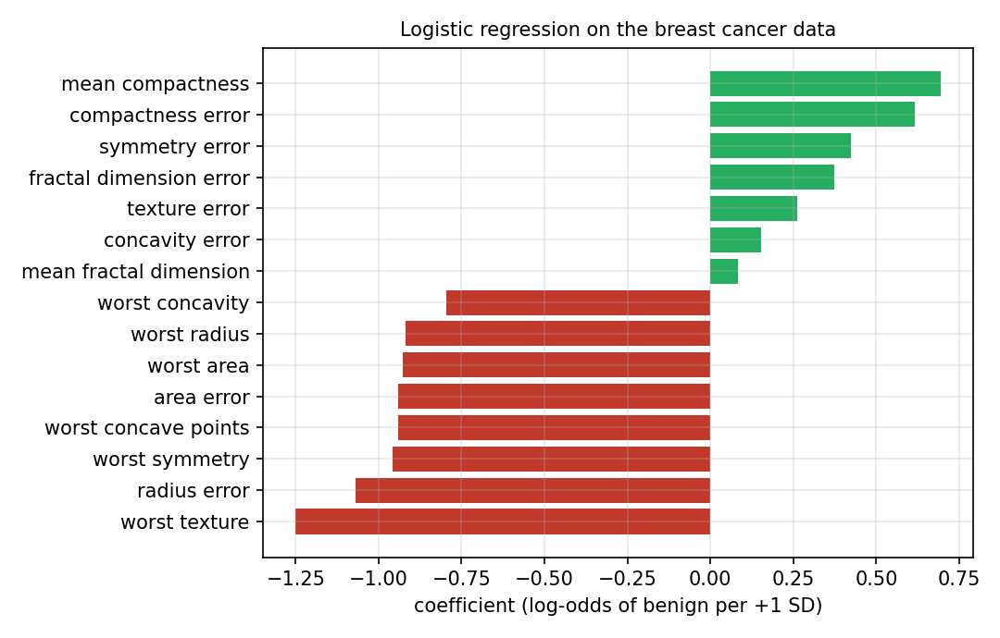
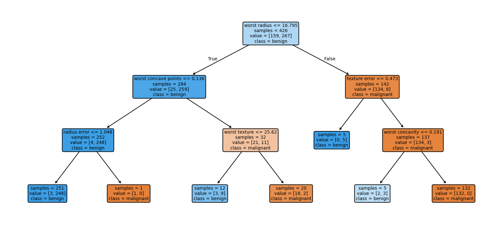
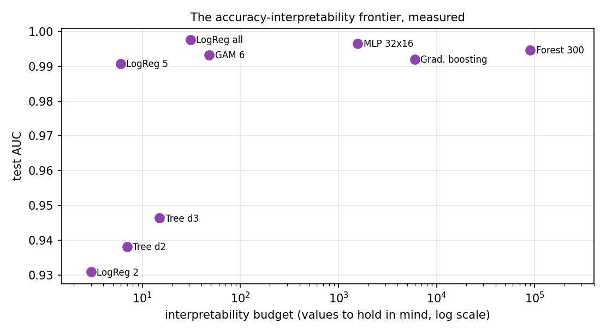
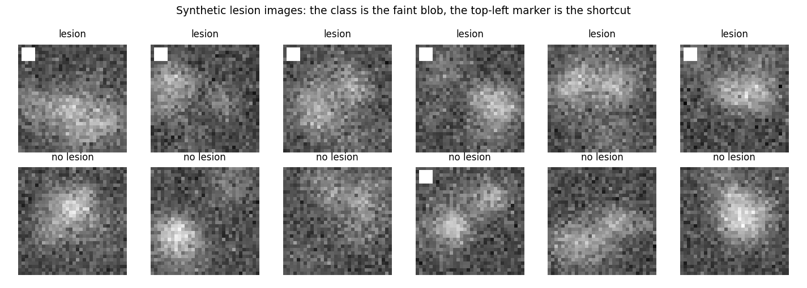

Overview
Machine learning models now support decisions in medicine, finance and engineering. A model can be accurate and still be unacceptable if nobody can see why it decides as it does. This first day introduces explainable artificial intelligence (XAI): Why explanations are needed, how the field defines interpretability, how explanation methods are grouped and which models are readable by design [1, 2]. It closes with a model that scores very well and is right for the wrong reason, the kind of failure that explanations exist to reveal [3]. The running example of the course is the diagnosis of breast tumours from measurements of cell nuclei [4].
Day at a glance
flowchart LR A["Why explain a model?"] --> B["Interpretability and explainability"] B --> C["A map of methods"] C --> D["Models that explain themselves"] D --> E["Accuracy and readability"] E --> F["What makes a good explanation"] F --> G["Accurate for the wrong reason"] G --> H["Python step 1"]
Every method on this page is also written as Python code in the Colab notebook of the day. A Colab notebook is a document of text and Python code that runs in the web browser, with nothing to install. Its code is divided into numbered sections. Each orange box on this page names the section whose code carries out what the text above the box explains. The box says what to run and what to look at in that section, and its button opens the notebook at that place. The practice parts and the self-assessment of the day are in the interactive lab.
Why explain a model?
A machine learning model is a rule that turns inputs into a prediction. Its details are not written by a programmer but found from examples, a process called training. The running example of the course is medical: A sample of cells is taken from a lump in the breast, a tumour, and measured under a microscope. A tumour is either malignant, which means cancerous, or benign, which means harmless. The share of right answers of a model on cases that were kept apart from training, the test data, is called its accuracy.
Suppose a model reads measurements of a breast tumour and predicts whether it is malignant. Its accuracy on test data is 97 percent. A doctor who uses it still has questions: Which measurements led to this prediction? Would a slightly different measurement change it? Did the model learn something medically meaningful, or a quirk of the data? Accuracy answers none of these questions.
Answering these questions for one diagnostic task is the project of the course. The task is the diagnosis of breast tumours from measurements of cell nuclei. An imaged version of it adds lesion images in which a hidden marker leaks the label, and because the marker is planted on purpose, every explanation of these images can be graded against the truth.
Each day adds one part of an explanation audit of these models. Day 1 builds readable models of the diagnosis and meets a model that is accurate for the wrong reason. Day 2 explains a random forest that cannot be read, for the whole model and for one patient. Day 3 trains a deep network on the lesion images and asks where it looks. Day 4 tests whether the probabilities, the explanations and the decisions can be trusted, with a credit model as a second case. Day 5 turns the results into artefacts for the clinic: a record, a dashboard and a model card. The final project asks for the same audit of a model that the student chooses.
Explanations serve several groups of people with different needs [1]. Developers use them to find errors and hidden shortcuts. Users such as doctors or engineers need them to decide when to trust a prediction. People affected by a decision, such as a rejected loan applicant, may have a right to understand it. Regulations such as the Artificial Intelligence Act of the European Union ask for transparency in high-risk applications [6]. Explanations also support scientific discovery, when a model points to a relation that experts had not noticed [7].
A person or a group with an interest in the decisions of a model is called a stakeholder. Stakeholders ask for explanations out of four motives, and each motive is met by a different product, called an artefact in this course: a chart, a sentence or a stored record.
| Motive | Who asks | Question | Artefact that answers it |
|---|---|---|---|
| Trust | A user, such as a doctor | Should this prediction be acted upon? | The reasons for this prediction, such as a chart of the inputs that pushed it |
| Debugging, the search for the cause of an error | A developer | Why is this case wrong? | A view of what the model relies on, such as a ranking of its inputs |
| Recourse, a way to obtain a different outcome | A person affected by a decision | What must change? | A sentence that names a small change the person can make |
| Compliance, meeting the rules of a law or a standard | An auditor or a regulator | Can the decision be documented and repeated? | A stored record of the model, the inputs and the output |
An artefact that serves one motive can be useless for another: A ranking of the inputs helps a developer and tells a rejected applicant nothing that she can act on.
Check your understanding. A model has 97 percent test accuracy. Why can it still need an explanation?
The words of this section have fixed symbols in the course. One case, here one tumour, is described by \(d\) numbers, called features or measurements: \(x = (x_1, \ldots, x_d)\), where \(x_j\) is feature number \(j\). The correct answer for a case is its label \(y\), and the possible labels are the classes, here malignant and benign. A model is a function \(f\), and its prediction for the input \(x\) is written \(\hat{y} = f(x)\), with a hat for a predicted value. A model that predicts a class is called a classifier. The cases with a known label are split into the training data, from which the model is built, and the test data. As a formula, accuracy is
A model that is right for 139 of 143 test tumours has an accuracy of \(139 / 143 = 0.972\), or 97 percent.
The data of the day are the Breast Cancer Wisconsin (Diagnostic) data: 569 tumours, 212 malignant and 357 benign [4]. For every tumour, ten properties of the cell nuclei were measured on a microscope image: radius, texture, perimeter, area, smoothness, compactness, concavity, concave points, symmetry and fractal dimension [8]. Concave points are the dents in the outline of a nucleus. Each property enters three times: as its mean over the nuclei of the image, as its standard error and as its worst value. The standard error grows with the spread among the nuclei, and the worst value is the mean of the three largest values. This gives \(d = 30\) features with names such as mean radius, radius error and worst concave points. The label is a number, \(y = 0\) for malignant and \(y = 1\) for benign. Of the 569 tumours, 426, 75 percent, serve as training data and the other 143 as test data, with the same share of malignant tumours, 37 percent, in both parts.
Two kinds of plot show how the classes differ in a feature. A histogram counts how many tumours fall into each range of values, and a scatter plot shows every tumour as a point with one feature on each axis. The benign tumours have a mean worst radius of 13.4 and the malignant ones of 21.1, but the two groups overlap between 12.8 and 19.8.
Python code in the Colab notebook, Section 1. Open Sections 1 and 2 of the Colab notebook and run them. Section 1 loads the 569 tumours, splits them into training and test data with train_test_split, prints the number of tumours of each class and draws two histograms and a scatter plot. Section 2 holds the threshold rule as the function rule and finds the best threshold with np.argmax(train_acc). Its cell draws the accuracy for every threshold and the confusion matrix and prints the test accuracy of the best rule.
Interpretability and explainability
Doshi-Velez and Kim define interpretability as the ability to explain or present a model in terms that a human can understand [2]. Two words are used for this idea. A model is called interpretable when a person can follow how it works directly, as with a short list of rules. An explanation, in contrast, is something produced about a model, for example a chart of the most influential inputs. Lipton warns that both words are used loosely, and that a claim of interpretability should always say for whom and for what purpose [9].
The course uses the two words as follows. Interpretability is a property of the model itself: A person can inspect the model and predict what it will do. Such a model is also called a glass box. Explainability is the ability to produce explanations with a method that is applied after training, also for a model that cannot be read, a black box. A black box need not be secret: The random forest of this day can be printed in full, and its 10344 decision nodes are more than any reader can hold in mind. An explanation of a black box is a second, simpler description of the model and in general only an approximation.
A map of explanation methods
Explanation methods are usually placed on three axes [1, 10]. The first asks whether the explanation covers the whole model or one prediction. The second asks whether the model is readable by design or the explanation is computed after training. The third asks whether a method works for any model or only for one family, such as neural networks.
A neural network is a model built from many simple computing units arranged in layers, and a network with many layers is called deep. A saliency map is an image that marks how strongly each pixel of an input image influenced a prediction [11]. Gradient-weighted class activation mapping, abbreviated Grad-CAM, marks the regions of an image that a network used [12]. Shapley additive explanations, abbreviated SHAP, split one prediction into shares of the inputs [13]. Coefficient is another word for a weight of a model.
| Axis | Options | Example |
|---|---|---|
| Scope | global: the whole model; local: one prediction | the coefficients of a model; the reasons for one decision |
| Origin | built in by design; computed after training (post-hoc) | a small decision tree; a saliency map |
| Reach | model-specific; model-agnostic | Grad-CAM for networks; SHAP for any model |
The Latin words post hoc mean after the event, here after training. Agnostic means not knowing: A model-agnostic method does not look inside the model and only asks it for predictions, so it works for any model. A model-specific method reads the inner parts of one family of models.
Part B of the interactive lab uses four further forms of explanation, which Day 2 builds. An attribution gives every input a number that states how much it contributed to a prediction, written \(\phi_j\) for feature \(j\), with the Greek letter phi. A permutation importance shuffles the values of one input and records how much the accuracy of the model falls. A partial dependence plot draws the average prediction against the values of one input. A counterfactual names a small change of the inputs that would have changed the decision [14].
Day 2 covers model-agnostic methods, Day 3 methods for deep networks, and Days 4 and 5 the reliability and use of explanations. Part B of the interactive lab places eight explanations from practice on this map.
Check your understanding. A bank tells a rejected applicant which three inputs lowered her score most, computed after training. Where does this explanation sit on the map?
Models that explain themselves
Some models are readable by design. The smallest one, and the first model of the diagnosis case, is a threshold rule. It compares one feature \(x_j\) with a fixed number, the threshold \(t\):
For the tumours the feature is worst concave points. Training this model means choosing the threshold: 32 values from 0.06 to 0.215 are tried, and the one with the highest accuracy on the training data is kept.
The symbol arg max returns the threshold at which the accuracy is largest, while max would return that accuracy itself. The result is 0.14, with a training accuracy of 0.918, and the rule can be said in one sentence: A tumour is benign when its worst concave points are at most 0.14. The errors of a classifier are counted in a confusion matrix, a table with one row for every true class and one column for every predicted class. For the rule on the test data it reads:
| True class | Predicted malignant | Predicted benign |
|---|---|---|
| Malignant, 53 test tumours | 45 | 8 |
| Benign, 90 test tumours | 7 | 83 |
The correct predictions stand on the diagonal of the table: 45 malignant tumours that the rule calls malignant and 83 benign tumours that it calls benign. The accuracy is \((45 + 83) / 143 = 128 / 143 = 0.895\).
The two kinds of error are not equally serious. The rule calls 8 of the 53 malignant tumours benign, 15 percent of them, and 7 of the 90 benign tumours malignant. A single accuracy hides this difference.
A logistic regression adds up the inputs, each multiplied by a weight, and turns the sum into a probability. The features have very different sizes: worst area reaches values in the thousands, and worst concave points stays below 0.3. Every feature is therefore first put on a common scale, a step called standardisation:
Here \(x_j^{(i)}\) is the value of feature \(j\) for training tumour \(i\), \(n = 426\) is the number of training tumours, and the sign \(\sum\) means: Add the term for \(i = 1, 2, \ldots, n\). The mean of the feature is \(m_j\), and \(s_j\) is its standard deviation, the usual measure of how far the values lie from their mean. The scaled value \(\tilde{x}_j\), written with a tilde, counts how many standard deviations a measurement lies above or below the mean. For worst radius, \(m_j = 16.20\) and \(s_j = 4.80\), so a worst radius of 24.30 becomes \((24.30 - 16.20) / 4.80 = 1.69\).
The model then forms a weighted sum of the scaled values, the score \(z\), and turns it into a probability \(p\) with the logistic function, written with the Greek letter sigma:
The weights \(w_1, \ldots, w_d\) and the bias \(b\) are the numbers that training finds, 31 values in all. The vertical bar reads given: \(P(y = 1 \mid x)\) is the probability that the tumour is benign, given its measurements. The number \(e = 2.718\) is the base of the natural logarithm, written \(\ln\). The logistic function maps every score to a number between 0 and 1: A score of 0 gives 0.5, a score of 2 gives 0.88 and a score of \(-2\) gives 0.12. The model predicts benign when \(p\) is above 0.5, that is, when \(z\) is positive.
The odds of an event are its probability divided by the probability of the opposite, \(p / (1 - p)\): A probability of 0.8 means odds of 4 to 1. Solving the logistic function for \(z\) shows that the score is the natural logarithm of the odds, the log-odds:
After the inputs are put on a common scale, each weight shows how strongly a measurement pushes a prediction towards one class. When feature \(j\) grows by one standard deviation and the others stay fixed, the log-odds of benign change by \(w_j\), and the odds are multiplied by \(e^{w_j}\). A negative weight pushes towards malignant and a positive weight towards benign. The model is its own explanation.

Red bars are negative weights and green bars positive ones. The longest bar belongs to worst texture with \(-1.25\): One standard deviation more of this feature multiplies the odds of benign by \(e^{-1.25} = 0.29\). It is followed by radius error with \(-1.07\) and by five weights between \(-0.96\) and \(-0.92\), among them worst radius, worst area and worst concave points. Of the 30 weights, 22 are negative, and the bias is \(b = 0.28\). The model classifies 141 of the 143 test tumours correctly, an accuracy of 0.986.
A weight states what happens when one feature changes and all others stay as they are. Features that rise and fall together, such as mean radius, mean perimeter and mean area, are called correlated, and they share one effect among their weights in a way that can look odd. Malignant tumours have the higher mean compactness on average, 0.145 against 0.080, and yet its weight is positive, \(+0.69\). The weights describe the model exactly. They do not describe each feature on its own.
The same sum explains a single prediction. The product of a weight and the scaled value of one patient is the contribution of that feature to the score, an attribution in the sense of the map of methods:
The weights are a global explanation, the same for all patients, and the contributions are a local explanation of one prediction. Together with the bias, the contributions add up to the score exactly, so this explanation leaves nothing of the model out.
A model with three features has the bias \(b = 0.3\) and the weights \(-0.9\), \(-1.2\) and \(0.7\). A patient has the scaled values 2.0, 0.5 and 1.0. The contributions are \(-0.9 \times 2.0 = -1.8\), \(-1.2 \times 0.5 = -0.6\) and \(0.7 \times 1.0 = 0.7\), and the score is \(z = 0.3 - 1.8 - 0.6 + 0.7 = -1.4\).
The probability of benign is \(1 / (1 + e^{1.4}) = 1 / (1 + 4.06) = 0.20\), so the model predicts malignant, and the first feature is the main reason. The odds of benign are \(e^{-1.4} = 0.25\), one to four.
For test patient 5, the six largest of the 30 contributions lie between \(-1.55\) for worst area and \(-1.15\) for worst perimeter, and all 30 add up to \(-14.13\). The score is \(z = 0.28 - 14.13 = -13.85\) and the probability of benign about one in a million, 0.00 when rounded to two decimals. The diagnosis of this patient is malignant.
How the weights are found. Training searches for the weights with which the predicted probabilities fit the labels of the training tumours. The misfit for tumour \(i\) is the log loss \(\ell^{(i)}\), written with a script letter l, and training makes the function \(J\) as small as possible:
Here \(y^{(i)}\) is the label of the tumour, 1 or 0, and \(p^{(i)}\) the predicted probability of benign. For a benign tumour the loss is \(-\ln p^{(i)}\): A probability of 0.9 costs 0.11, and a probability of 0.1 costs 2.30. The second sum of \(J\) is a penalty on large weights, called regularisation, which makes the model depend less on the particular training tumours. The constant \(C\) sets the balance between fit and penalty, and the model of the day keeps the standard value \(C = 1\) of the scikit-learn library [15].
No formula gives the minimum directly. It is found step by step: All weights start at zero, and every step moves each weight a little in the direction that lowers the loss. For the mean of the losses, without the penalty, one step of this method, called gradient descent, is
The arrow means that the value on the left is replaced by the value on the right. The Greek letter alpha, \(\alpha\), is the step size, called the learning rate, and \(p^{(i)} - y^{(i)}\) is the error of the current model for tumour \(i\). The bias is updated in the same way, with 1 in the place of \(\tilde{x}_j^{(i)}\). The linear score of Part A of the interactive lab is trained in exactly this way, with \(\alpha = 0.4\) and 600 steps. Scikit-learn uses a faster method of the same kind and stops when further steps no longer lower \(J\).
Check your understanding. A logistic regression has the bias 0.5 and the weights \(-2\) and 1. A patient has the scaled values 1.0 and 0.5. What is the predicted probability of the class 1?
Python code in the Colab notebook, Section 3. Open Section 3 of the Colab notebook and run it. The model logit is a StandardScaler followed by a LogisticRegression, and the function explain_patient multiplies the scaled values of one patient by the weights coef_[0]. Move the slider to choose a test patient: The bar chart shows the six largest contributions and the predicted probability.
A decision tree asks a sequence of yes or no questions about the inputs, and every prediction follows one path from the top question to a leaf. Each question compares one feature with a threshold, \(x_j \le t\). A case that answers yes goes to the left, a case that answers no to the right, and a value equal to the threshold counts as yes. Every question and every final answer is a node: The top question is the root, and a node without a further question is a leaf. The depth of a tree is the largest number of questions on one path. A leaf predicts the class that most of its training cases have.
How a tree is grown. A tree is built from the training data, one question at a time. A good question separates the classes: After it, each side should hold mostly one class. How mixed a node is, is measured by its Gini impurity \(G\), where \(p\) is the share of benign tumours among the training tumours of the node:
A node with one class only is called pure and has \(G = 0\), and a node with half of each class has the largest value, 0.5. A question sends \(n_{\mathrm{left}}\) tumours of a node to the left and \(n_{\mathrm{right}}\) to the right, and its quality is the weighted mean of the two impurities:
The algorithm tries every feature and every threshold midway between two neighbouring values of the training data and keeps the question with the smallest \(G_{\mathrm{split}}\). It then repeats the search separately for the left and the right part. A node is not split further when it is pure or when the allowed depth is reached, here a depth of 3. The procedure is known as CART, for classification and regression trees.
The root of the tree in the figure below holds the 426 training tumours, 159 malignant and 267 benign. The share of benign is \(p = 267 / 426 = 0.627\), and the impurity is \(G = 2 \times 0.627 \times 0.373 = 0.468\).
The question worst radius <= 16.795 sends 284 tumours to the left, 25 malignant and 259 benign, and 142 to the right, 134 malignant and 8 benign. The impurities are \(2 \times (259 / 284) \times (25 / 284) = 0.161\) on the left and \(2 \times (8 / 142) \times (134 / 142) = 0.106\) on the right, and their weighted mean is \((284 \times 0.161 + 142 \times 0.106) / 426 = 0.14\). One question lowers the impurity from 0.47 to 0.14, and no other question reaches a lower value.
A tree of depth three can be printed on one page and checked by an expert. Deeper trees fit the data better but quickly become too large to read, as the animation shows. Part C of the interactive lab asks for the paths of five patients, followed by hand.
Animation. A decision tree on simulated tumours with two measurements, each scaled to the range from 0 to 1. Increase the depth and watch the test accuracy, the number of leaves \(L\) and the number of values a reader must follow, \(2L - 1\).
The animation grows a tree on 300 simulated tumours and tests it on 120 others, and every question appears as a straight border between the coloured regions. Its count of the values to read is the number of nodes. A tree with \(L\) leaves has \(L - 1\) questions, and a tree of depth \(D\) has at most \(2^D\) leaves, because every level can double their number:
From depth 1 to depth 7 the tree of the animation grows from 2 to 29 leaves and from 3 to 57 nodes, while its test accuracy stays between 83 and 89 percent.

Each box of the figure is a node. Its first line is the question, and samples is the number of training tumours that reach the node. The line value lists how many of them are malignant and how many benign, and class names the majority, which a leaf predicts. Orange boxes hold mostly malignant and blue boxes mostly benign tumours. The tree has 6 questions and \(L = 7\) leaves, so \(2 \times 7 - 1 = 13\) nodes, and it classifies 135 of the 143 test tumours correctly, an accuracy of 0.944.
Test patient 10 has a worst radius of 16.67, worst concave points of 0.141 and a worst texture of 21.51. At the root, \(16.67 \le 16.795\) is true, so the path goes left. At the next node, \(0.141 \le 0.136\) is false, so the path goes right. At the third node, \(21.51 \le 25.62\) is true, so the path goes left and ends in a leaf.
The leaf holds 12 training tumours, 3 malignant and 9 benign, and predicts benign. The explanation of the prediction is the path itself: worst radius at most 16.795, worst concave points above 0.136 and worst texture at most 25.62. The leaf also shows how firm the answer is: 9 of 12 training tumours, 75 percent, are benign.
A path that can be read is not automatically a path that can be trusted: Test patient 94 ends after two questions in a leaf with only five training tumours, all benign, and the tree predicts benign for a malignant tumour. Depth has a price as well. From depth 1 to depth 6, the tree grows from 3 to 33 nodes. Its accuracy on the training tumours rises with every level, from 0.923 to 0.998, while its accuracy on the test tumours peaks at 0.944 for depths 3 and 4 and then falls to 0.937. A model that fits its training data better than new data is said to overfit.
Check your understanding. What does a reader of a depth-three decision tree see for one prediction?
Check your understanding. A node of a decision tree holds 40 training tumours, 10 malignant and 30 benign. What is its Gini impurity?
Python code in the Colab notebook, Section 4. Open Section 4 of the Colab notebook and run it. DecisionTreeClassifier(max_depth=3) grows the tree, and the function path_of prints the questions on the path of one patient. The tree of this section asks area error <= 91.555 where the figure above asks radius error <= 1.048. Both questions split off the same single tumour, so the two trees predict alike. A slider then grows the tree to greater depths and shows its number of nodes and its test accuracy.
Accuracy and readability
It is often said that readable models must be less accurate than complex ones. Rudin argues that for many problems with structured data this trade-off is small or absent, and that high-stakes decisions should use models that are readable by design instead of explaining complex models after the fact [16]. A trade-off is a gain in one quality that is paid for with a loss in another, and structured data are data in the form of a table, like the tumour data. The diagnosis case tests the claim: A logistic regression with 31 values, 30 weights and the bias, reaches a test accuracy of 0.986, and a random forest with more than ten thousand decision nodes reaches 0.958. For images, sound and text, deep networks are usually far more accurate, and post-hoc explanations are then the practical option.
A random forest is an ensemble, a model that combines many models, here \(B\) decision trees. Each tree is grown on its own random sample of the training cases, drawn with replacement. At each question it may choose only among a few randomly picked features, 5 of the 30 here. The trees therefore differ, and the forest averages their answers:
Here \(P_k(y = 1 \mid x)\) is the share of benign tumours in the leaf that the case \(x\) reaches in tree \(k\), and the forest predicts benign when the average is above 0.5. The forest of the day has \(B = 300\) trees without a depth limit, which together have 10344 nodes. Every single tree is readable. Their average is not: A reader would have to follow 300 paths for one prediction.
To compare models of different kinds, the comparison counts the values a reader must hold in mind to reproduce a prediction by hand: 1 for the threshold rule, 31 for the logistic regression and the number of nodes for a tree or a forest. The table gives the results:
| Model | Values to hold in mind | Test accuracy |
|---|---|---|
| Threshold rule on worst concave points | 1 | 0.895 |
| Tree of depth 1 | 3 | 0.923 |
| Tree of depth 2 | 7 | 0.909 |
| Tree of depth 3 | 13 | 0.944 |
| Tree of depth 5 | 29 | 0.937 |
| Logistic regression | 31 | 0.986 |
| Random forest of 300 trees | 10344 | 0.958 |
The logistic regression is the most accurate model of the table and is wrong for 2 of the 143 test tumours. The forest holds over three hundred times as many values and is wrong for 6. One tumour is worth 0.7 percentage points here, so small differences should not be over-read. On a chart of the table with a logarithmic horizontal axis, every step to the right multiplies the number of values by ten. The upper edge of the points, the best accuracy available for a given number of values, is called the frontier. Where it becomes flat, more complexity buys no more accuracy.
The figure below repeats the comparison with nine models and a second measure of quality. Accuracy looks only at the side of 0.5 on which a predicted probability falls. The area under the curve, abbreviated AUC, looks at the order of the probabilities. Take every pair of one benign and one malignant test tumour. A pair is ordered correctly when the benign tumour receives the higher probability of benign, and tied when both probabilities are equal:
Here \(n_1\) is the number of benign and \(n_0\) the number of malignant test tumours, so \(n_1 \times n_0\) is the number of pairs. An AUC of 1 means that every benign tumour is ranked above every malignant one, and ranking at random gives about 0.5. The full name is area under the receiver operating characteristic curve, a curve under which this share appears as an area.
A model gives three benign tumours the probabilities of benign 0.9, 0.7 and 0.4, and two malignant tumours 0.6 and 0.1. There are \(3 \times 2 = 6\) pairs. The benign tumours with 0.9 and 0.7 lie above both malignant ones, which gives 4 correctly ordered pairs. The benign tumour with 0.4 lies above 0.1 and below 0.6, which gives one more. The AUC is \(5 / 6 = 0.83\).

The horizontal axis of the figure is an estimate of the number of values and, for the large models, not an exact count: The forest is placed at 90000, while its trees hold about 10000 nodes. LogReg 2, LogReg 5 and LogReg all are logistic regressions on the 2 and the 5 features with the largest weights and on all 30. Tree d2 and Tree d3 are trees of depth 2 and 3. GAM 6 is a generalised additive model, abbreviated GAM, on six features, which the last section of this lecture, Going further, explains. MLP 32x16 is a multilayer perceptron, abbreviated MLP, a neural network with two inner layers of 32 and 16 units. Gradient boosting is an ensemble of 100 small trees in which each tree corrects the errors of the trees before it.
The 143 test tumours form \(90 \times 53 = 4770\) pairs. The logistic regression on all 30 features orders 4759 of them correctly, the highest AUC of the figure, 0.998. The network reaches 0.997, the forest of 300 trees 0.995, and the two trees and the logistic regression on two features stay below 0.95. Beyond a few dozen values the frontier is flat.
Check your understanding. On the tumour data, a logistic regression matches a random forest. What follows?
Python code in the Colab notebook, Section 5. Open Section 5 of the Colab notebook and run it. The cell trains the rule, the logistic regression, four trees and the forest, counts for each of them the values a reader must hold in mind and prints the table above. It draws the same numbers as a chart with a logarithmic axis.
What makes a good explanation
An explanation is itself a model of the model, and it can be good or bad. Three properties are checked most often [17, 18]. Fidelity asks whether the explanation agrees with what the model actually does. Stability asks whether similar inputs receive similar explanations. Understandability asks whether the intended reader can use it, which depends on the reader: A data scientist and a patient need different explanations of the same prediction. The animation shows how an explanation can jump while the prediction hardly moves.
For the models of this day, fidelity is perfect by construction: The contributions of a logistic regression add up to its score exactly, and the path of a tree is the computation of the tree. An explanation computed after training reproduces only a part of what the model does, and the last section of this lecture, Going further, measures that part.
Stability can be put into numbers with the smallest explanation of all, the local slope. For a model \(f\) with one input \(x\), the slope or derivative \(e(x) = df / dx\) states how much the output changes when the input grows a little. Let \(x'\) be a slightly changed input. Such a small change is called a perturbation. The relative changes of the prediction and of the explanation are
The vertical bars take the absolute value, the size of a number without its sign, and the Greek letter delta, \(\Delta\), stands for a change. An explanation is stable at \(x\) when small perturbations give a small \(\Delta_e\).
A model gives the output 0.62 at a point and 0.65 after a small perturbation. Its slope is 2.0 at the point and 0.4 after the perturbation. The prediction changes by \(|0.65 - 0.62| / 0.62 = 0.048\), about 5 percent. The explanation changes by \(|0.4 - 2.0| / 2.0 = 0.8\), or 80 percent: It is unstable, although the model itself hardly changed.
Animation. A model whose output changes gradually, and the local slope (dashed line) that explains one point. Move the point with the slider and compare the two readouts: the relative change of the prediction and of the explanation, both measured from the starting point.
The model of the animation has a kink at \(x = 0.5\), a point where its slope changes abruptly. At the starting point \(x = 0.48\) the output is 0.284 and the slope 1.46. A perturbation of \(+0.020\) changes the output by 10.6 percent and the slope by 6 percent. One step of the slider further, at \(+0.022\), the output has changed by 10.7 percent and the slope by 91 percent. Models built from trees have many such abrupt changes, because their output moves in steps.
Understandability has no formula, but one ingredient can be counted: An explanation is sparse when it uses few inputs. The explanation of test patient 5 above names only the six largest of the 30 contributions for this reason.
Check your understanding. Two almost identical patients receive very different explanations. Which property is violated?
Accurate for the wrong reason
Geirhos and colleagues describe shortcut learning: A model finds a simple cue in the training data that predicts the label without being the reason for it [3]. A well-known kind of case in medical imaging is a ruler, a marker or a scanner label that appears more often in images of one class. The lesion images of the diagnosis case are such a case: synthetic tumour images in which a bright marker in the corner appears in almost every image with a lesion.
Synthetic means that a program draws the images, so the true reason for every label is known. Each image has 32 by 32 pixels, 1024 grey values between 0 for black and 1 for white. The background is random noise around 0.30 with six soft bright patches at random places. A patch is a bump of brightness that fades within a few pixels of its centre. With a probability of one half the image receives a lesion, a damaged region of tissue, drawn as one more patch near the centre, and the label \(y = 1\). The lesion has a brightness of 0.25 at its centre and the background patches between 0.10 and 0.22, so a lesion is hard to tell from the background. The marker is a white square of 4 by 4 pixels near the top left corner. It is added to 97 percent of the images with a lesion and to 3 percent of the images without one.

The top row of the figure holds six images with a lesion, and five of them carry the marker. The bottom row holds six images without a lesion, and one of them carries the marker. The lesion is hard to see, and the marker cannot be missed.
The model is a logistic regression on the raw pixels, with one weight per pixel, trained on 2400 images. A simple model reaches 96 percent accuracy on test images of the same kind and only 50 percent, the level of guessing, when the marker no longer carries information. Nothing in the accuracy warned of this. The first number comes from 600 images that were split off at random from the same data, so the marker works in them as in training. The second comes from 800 new images in which the marker appears in half of the images of either class. A random split cannot reveal a shortcut. It shows only on data in which the cue and the label have been separated.
An explanation that shows where the model looks reveals it at once. Because the model is linear, the size of a weight, its absolute value \(|w_k|\), shows how strongly the model listens to pixel \(k\). These sizes can be drawn as an image, and the share that falls on the 16 pixels of the marker is
The sign \(\in\) reads in: The upper sum runs over the pixels of the marker only. The marker covers \(16 / 1024 = 0.016\) of the image, 1.6 percent, and the shortcut model puts 4.7 percent of its weight there, three times as much. Its predictions agree with the presence of the marker in every one of the 600 test images: In effect it has learned the rule that a marker means a lesion.
The repair is in the data: When the model is trained on images in which the marker appears equally often in both classes, it has to look for the lesion itself. The repaired model has a marker share of 1.4 percent and reaches 61 percent on both test sets, a lower accuracy that no longer depends on the cue. A linear model on raw pixels finds that much harder, which is why Day 3 turns to convolutional networks. These are neural networks for images that search for a pattern at every position, while one fixed weight per pixel can only register that the centre of an image is a little brighter.
Check your understanding. A model scores 96 percent on test data and 50 percent once a marker stops carrying information. What did it learn?
Python code in the Colab notebook, Section 6. Open Section 6 of the Colab notebook and run it. The function make_lesion_images draws the synthetic images, and marker_share is the formula above, computed from the sizes of the weights, np.abs(m.coef_[0]). The cell trains the shortcut model and the repaired model, prints their accuracies and marker shares and draws the two maps of weights side by side.
Explanations in your field
The same questions apply in every field that uses data to decide: Which measurements matter, can the model be read, and does it rely on something it should not? The application of the day loads a problem from medicine, chemistry, manufacturing, energy or civil engineering and builds a logistic regression, a tree of depth 3 and a random forest for it. Every problem has two classes, and the class with the label 1 is called the positive class.
| Field | Cases | Features | Positive class |
|---|---|---|---|
| medicine | 569 tumours, real data | the 30 measurements of the cell nuclei | benign tumour |
| chemistry | 178 wines, real data | 13 chemical measurements, such as alcohol and proline | wine of the first of three grape varieties, called cultivars |
| manufacturing | 1500 simulated weld seams | current in ampere, voltage in volt, travel speed in millimetres per second, gap in millimetres, plate temperature in degrees Celsius | sound weld |
| energy | 1500 simulated samples of transformer oil | five dissolved gases in parts per million: hydrogen (H2), methane (CH4), acetylene (C2H2), ethylene (C2H4) and carbon monoxide (CO) | fault in the transformer |
| civil | 1500 simulated concrete mixes | cement, water, slag and superplasticizer in kilograms per cubic metre, age in days | mix that reaches a strength of 30 megapascals |
In the three simulated fields a known rule creates the label: A score \(s\) is computed from the features, random noise \(\varepsilon\) with the mean 0 is added, and the result is compared with a limit. The letter \(\varepsilon\) is the Greek epsilon. For the weld seams the score is
A weld is sound when \(s\) is positive. The noise has the standard deviation 1, and the voltage does not enter the rule. For the transformer oil, with square brackets for the concentration of a gas, the score is
A fault is present when this score is above 0.6. The noise has the standard deviation 0.6, and methane does not enter the rule. For the concrete mixes the rule gives a strength in megapascals:
A mix is positive when its strength is above 30, and the noise has the standard deviation 4. Because of the noise, no model can be perfect on these data. The rule itself, applied without its noise, is right for only 79 percent of the weld seams, 77 percent of the oil samples and 92 percent of the concrete mixes in the test data. A model that comes close to these values has found the rule, and its weights show it. For the weld seams the logistic regression gives \(+1.33\) to the current, \(-1.80\) to the speed, \(-1.65\) to the gap, \(+0.39\) to the plate temperature and \(-0.02\) to the voltage.
Python code in the Colab notebook, Section 7. Open Section 7 of the Colab notebook. Its first line is a switch, FIELD = "medicine". Replace the word by chemistry, manufacturing, energy or civil and run the section. The function load_field loads or simulates the data of that field, and the cell trains a logistic regression, a tree of depth three and a random forest on them and shows the weights, the tree and the test accuracies.
Going further (optional)
Two ideas extend the day for readers who want more depth. A generalised additive model replaces each weight of a logistic regression by a smooth curve, one per input, and adds the curves up, so that it captures nonlinear effects and stays readable [19]:
Here \(\mathbb{E}[y \mid x]\) is the expected value of the label given the inputs, which for a label of 0 or 1 is the probability \(p\) of the class 1. The function \(g\) is called the link function and is here the log-odds, \(g(p) = \ln(p / (1 - p))\). The Greek letter beta with the index 0, \(\beta_0\), is the bias, and \(f_j\) is the curve of feature \(j\), called its shape function. A logistic regression is the special case in which every shape function is a straight line, \(f_j(x_j) = w_j \tilde{x}_j\). An effect is nonlinear when its curve is not a straight line.
The model of this section builds each shape function as a weighted sum of seven splines, smooth bump-shaped functions that each cover one part of the range of a feature. The weights are found like those of a logistic regression, with \(C = 0.5\). With the four features worst radius, worst texture, worst concave points and mean smoothness, the model has \(4 \times 7 = 28\) weights and a bias, and it classifies 138 of the 143 test tumours correctly, an accuracy of 0.965. For each feature, a curve shows the log-odds of benign while the other three are held at their median, the middle value of the training tumours. The curve of worst radius changes little up to about 12, falls steeply and crosses zero near 18.6, where the prediction changes from benign to malignant. A single weight could not show such a threshold.
The quality of an explanation can also be measured. For a local linear explanation \(g\) of a model \(f\) around a case \(x\), fidelity is the share of the model's behaviour near \(x\) that the explanation reproduces, and stability compares the change of the explanation with the change of the input [17]. Here \(f\) is the random forest, and \(g\) is no longer the link function but the explanation, a small model of its own. Day 2 develops it into the method of local interpretable model-agnostic explanations, abbreviated LIME [20]. The explanation draws 400 sample points \(z\) around the patient \(x\) by adding random noise with a quarter of the standard deviation \(s_j\) to every feature, and asks the forest for its probability of benign \(f(z)\) at each point. A sample point close to the patient receives a large weight:
Here \(u_j\) is the offset of the sample point in feature \(j\), counted in standard deviations, and \(\exp(v)\) is another way to write \(e^v\). The double bars are the length of the vector \(u\), the square root of the sum of its squared entries, and \(h\) is the median of the 400 lengths. The Greek letter pi in \(\pi_x(z)\) names the weight. The explanation is the linear model \(g(z) = a_0 + a_1 u_1 + \ldots + a_d u_d\) that fits the answers of the forest best. Its coefficients make the weighted sum of the squared differences between \(f(z)\) and \(g(z)\), plus the sum of the squares of \(a_1\) to \(a_d\), as small as possible. Such a fit with a penalty is called ridge regression. The coefficients \(a_1\) to \(a_d\) are the explanation \(e(x)\): Each \(a_j\) estimates how much the forest's probability changes near this patient when feature \(j\) grows by one standard deviation. The fidelity is
The numerator adds up the weighted squared errors of the explanation over the sample points. The denominator does the same for the plainest explanation possible, the constant \(\bar{f}\), the weighted mean of the answers of the forest. A fidelity of 1 means that the explanation reproduces the forest exactly at the sample points, and 0 that it is no better than the constant. For test patient 3, the fidelity is 0.638: The explanation reproduces 64 percent of the variation of the forest around this patient.
Three sample points have the weights 1, 1 and 0.5. The forest answers 0.8, 0.6 and 0.2, and the linear explanation 0.7, 0.6 and 0.4. The weighted mean of the forest is \((1 \times 0.8 + 1 \times 0.6 + 0.5 \times 0.2) / 2.5 = 0.6\).
The numerator is \(1 \times 0.1^2 + 1 \times 0^2 + 0.5 \times 0.2^2 = 0.03\), and the denominator is \(1 \times 0.2^2 + 1 \times 0^2 + 0.5 \times 0.4^2 = 0.12\). The fidelity is \(1 - 0.03 / 0.12 = 0.75\).
For stability, the general measure asks for the worst case among all inputs \(x'\) within a distance \(\varepsilon\) of \(x\):
It is the largest change of the explanation per unit of change of the input. A plainer average serves here. The patient is perturbed \(K = 8\) times with noise of 2 percent of the standard deviation of every feature, the explanation is computed again each time, and the mean relative change is reported:
This is the measure \(\Delta_e\) of the animation for an explanation with 30 numbers, and the result is 29.2 percent. Each repetition changes two things at once, the patient and the 400 random sample points. With the same patient and new sample points only, the mean change is 29.0 percent, and with the perturbed patient and unchanged sample points it is 6.7 percent. Most of the instability of this explanation comes from its own random sampling, a reminder that post-hoc explanations need checks of their own. Days 2 and 4 return to both measures.
Python code in the Colab notebook, Section 8. Open Section 8 of the Colab notebook, which is optional, and run it. The first cell fits the generalised additive model with SplineTransformer and draws its curves. The function local_explanation then samples 400 points around one patient, fits the weighted linear explanation with Ridge and computes its fidelity, and the loop over seed=k measures its stability.
Python step 1: Values, variables, lists and decisions
Python code in the Colab notebook, right after Section 0 (setup). Open the notebook and run this step cell by cell: It consists of short pieces of Python code with their explanations, a quick check and three exercises. Topics: Values and variables · A decision is an if statement · Lists and loops · Functions · Dictionaries and a rule list.
Students who have never programmed start with the start-here notebook of the course.
The notebook continues with the hands-on sections, and the interactive lab holds three practice parts and the self-assessment. The study path, the daily task and the research assignment are on the day overview.
Review cards
Select a card to turn it over.
References
[1] Arrieta, A. B., Díaz-Rodríguez, N., Del Ser, J., Bennetot, A., Tabik, S., Barbado, A., García, S., Gil-López, S., Molina, D., Benjamins, R., Chatila, R., & Herrera, F. (2020). Explainable Artificial Intelligence (XAI): Concepts, taxonomies, opportunities and challenges toward responsible AI. Information Fusion, 58, 82-115.
[2] Doshi-Velez, F., & Kim, B. (2017). Towards a rigorous science of interpretable machine learning. arXiv preprint arXiv:1702.08608.
[3] Geirhos, R., Jacobsen, J.-H., Michaelis, C., Zemel, R., Brendel, W., Bethge, M., & Wichmann, F. A. (2020). Shortcut learning in deep neural networks. Nature Machine Intelligence, 2(11), 665-673. https://doi.org/10.1038/s42256-020-00257-z
[4] Wolberg, W., Mangasarian, O., Street, N., & Street, W. (1993). Breast Cancer Wisconsin (Diagnostic) [Dataset]. UCI Machine Learning Repository. https://doi.org/10.24432/C5DW2B
[5] Van Rossum, G., & Drake, F. L. (2009). Python 3 Reference Manual. CreateSpace.
[6] European Parliament and Council of the European Union. (2024). Regulation (EU) 2024/1689 laying down harmonised rules on artificial intelligence (Artificial Intelligence Act). Official Journal of the European Union, L series, 12 July 2024. http://data.europa.eu/eli/reg/2024/1689/oj
[7] Kose, U., Şengöz, N., Chen, X., & Marmolejo Saucedo, J. A. (Eds.). (2024). Explainable Artificial Intelligence (XAI) in Healthcare. CRC Press.
[8] Mangasarian, O. L., Street, W. N., & Wolberg, W. H. (1995). Breast cancer diagnosis and prognosis via linear programming. Operations Research, 43(4), 570-577. https://doi.org/10.1287/opre.43.4.570
[9] Lipton, Z. C. (2018). The mythos of model interpretability. Communications of the ACM, 61(10), 36-43.
[10] Ortigossa, E. S., Gonçalves, T., & Nonato, L. G. (2024). Explainable Artificial Intelligence (XAI) - from theory to methods and applications. IEEE Access, 12, 80799-80846.
[11] Simonyan, K., Vedaldi, A., & Zisserman, A. (2014). Deep inside convolutional networks: Visualising image classification models and saliency maps. In Workshop at the 2nd International Conference on Learning Representations (ICLR 2014). arXiv:1312.6034. https://arxiv.org/abs/1312.6034
[12] Selvaraju, R. R., Cogswell, M., Das, A., Vedantam, R., Parikh, D., & Batra, D. (2017). Grad-CAM: Visual explanations from deep networks via gradient-based localization. In Proceedings of the IEEE International Conference on Computer Vision (ICCV 2017) (pp. 618-626). https://doi.org/10.1109/ICCV.2017.74
[13] Lundberg, S. M., & Lee, S.-I. (2017). A unified approach to interpreting model predictions. In Advances in Neural Information Processing Systems 30 (NeurIPS 2017) (pp. 4765-4774). https://papers.nips.cc/paper/7062-a-unified-approach-to-interpreting-model-predictions
[14] Wachter, S., Mittelstadt, B., & Russell, C. (2018). Counterfactual explanations without opening the black box: Automated decisions and the GDPR. Harvard Journal of Law & Technology, 31(2), 841-887. https://jolt.law.harvard.edu/volumes/volume-31
[15] Pedregosa, F., Varoquaux, G., Gramfort, A., Michel, V., Thirion, B., Grisel, O., Blondel, M., Prettenhofer, P., Weiss, R., Dubourg, V., Vanderplas, J., Passos, A., Cournapeau, D., Brucher, M., Perrot, M., & Duchesnay, E. (2011). Scikit-learn: Machine learning in Python. Journal of Machine Learning Research, 12, 2825-2830.
[16] Rudin, C. (2019). Stop explaining black box machine learning models for high stakes decisions and use interpretable models instead. Nature Machine Intelligence, 1(5), 206-215.
[17] Hedström, A., Weber, L., Krakowczyk, D., Bareeva, D., Motzkus, F., Samek, W., Lapuschkin, S., & Höhne, M. M.-C. (2023). Quantus: An explainable AI toolkit for responsible evaluation of neural network explanations and beyond. Journal of Machine Learning Research, 24(34), 1-11. https://jmlr.org/papers/v24/22-0142.html
[18] Bhatt, U., Xiang, A., Sharma, S., Weller, A., Taly, A., Jia, Y., Ghosh, J., Puri, R., Moura, J. M. F., & Eckersley, P. (2020). Explainable machine learning in deployment. In Proceedings of the Conference on Fairness, Accountability, and Transparency (FAT* '20) (pp. 648-657). ACM.
[19] Lou, Y., Caruana, R., & Gehrke, J. (2012). Intelligible models for classification and regression. In Proceedings of the 18th ACM SIGKDD International Conference on Knowledge Discovery and Data Mining (KDD '12) (pp. 150-158). ACM. https://doi.org/10.1145/2339530.2339556
[20] Ribeiro, M. T., Singh, S., & Guestrin, C. (2016). "Why should I trust you?" Explaining the predictions of any classifier. In Proceedings of the 22nd ACM SIGKDD International Conference on Knowledge Discovery and Data Mining (KDD '16) (pp. 1135-1144). ACM.
[21] Kluyver, T., Ragan-Kelley, B., Pérez, F., Granger, B., Bussonnier, M., Frederic, J., Kelley, K., Hamrick, J., Grout, J., Corlay, S., et al. (2016). Jupyter Notebooks: A publishing format for reproducible computational workflows. In Positioning and Power in Academic Publishing: Players, Agents and Agendas (pp. 87-90). IOS Press.